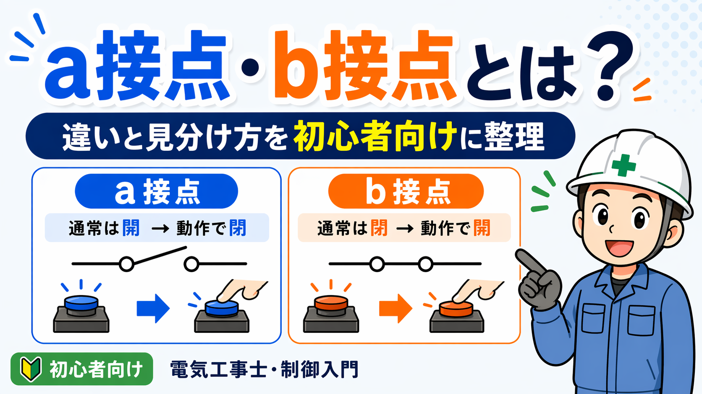

このカテゴリで分かること
「どっちを使うのか」「何が違うのか」を先に整理しておくと、記事を探す時も現場で判断する時も迷いにくくなります。
用語の違い
NO/NC、NPN/PNP、a接点・b接点など、図面や制御で混ざりやすい用語を整理します。
工具の使い分け
ドライバー、圧着工具、切断工具など、似ている工具を作業内容で使い分けます。
機器の選び方
センサ、表示機器、測定器など、用途によって選び方が変わるものを整理します。
まず見る比較
制御や工具まわりで、最初に迷いやすい違いをまとめています。
比較・使い分け記事一覧
記事が増えても探しやすいように、制御用語 → 工具 → 測定・表示 → 機器 の順で並べます。
NO / NC の違いを押さえる
常開・常閉の違いを、センサや安全機器で迷わないように整理します。
読む
NPN / PNP の使い分けを理解する
PLC入力やセンサ配線で迷いやすいNPN/PNPの違いを整理します。
読む
a接点・b接点の違いを理解する
回路図やラダーでよく見るa接点・b接点の見方を整理します。
読むテプラとレタツインの違い
盤内表示、線番、ラベル作成でどちらを使うかを整理します。
読む
油圧式と電動式の使い分け
作業量、スピード、持ち運びやすさで使い分けの目安を整理します。
読む
ドライバーの選び方と使い分け
手回し、差替式、充電工具など、締付作業で迷いやすい違いを整理します。
読む
ドリルドライバとインパクトの使い分け
穴あけ、ビス締め、盤作業でどちらを使うかを整理します。
読む
テスターで分かること・分からないこと
電圧・導通・抵抗確認など、現場での使いどころを整理します。
読む
テスターとメガーの違い
通電確認と絶縁抵抗測定の違いを、点検作業の目線で整理します。
読む
ケーブルカッターの使い分け
手動・ラチェット・充電式を、ケーブル太さや作業量で整理します。
読む今後増やしていく比較記事
比較カテゴリは、似ていて迷いやすいものを少しずつ整理していくページです。
制御・センサ系
- 光電センサと近接センサの違い
- ライトカーテンとエリアセンサの違い
- リミットスイッチとリードスイッチの使い分け
工具・作業系
- ニッパーとペンチの違い
- ストリッパーと電工ナイフの使い分け
- バンドソーとグラインダーの使い分け